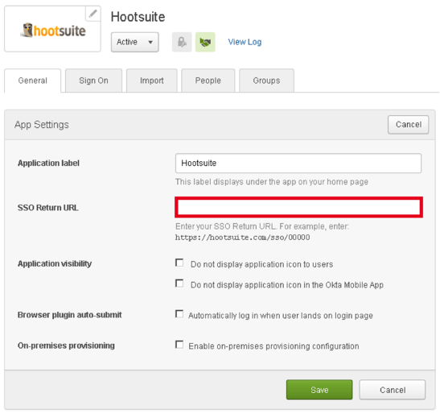

This setup might fail without parameter values that are customized for your organization. Please use the Okta Administrator Dashboard to add an application and view the values that are specific for your organization.
Send an email message to Hootsuite and request that they enable SAML for your organization.
Copy and paste the following in the SAML login URL into the message.
Sign into the Okta Admin dashboard to generate this value.
Select the link below to download a certificate. Attach the certificate to the message.
Sign into the Okta Admin dashboard to generate this value.
Hootsuite will process your request and send you an SSO Return URL.
In Okta, go to the General tab for the Hootsuite app. Enter the SSO Return URL, and then select Save, as shown below. 
Done!
Just In Time (JIT) provisioning is not supported.
IdP-initiated and SP-initiated flows are supported. To use an SP-initiated flow, open https://hootsuite.com/sso, enter your email address, and select the Single Sign-On button.